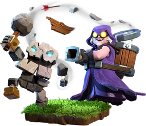

Ruin Witch
Updated: 26 August 2026 · By the Goblins Farm team
The Ruin Witch is a Home Village unit trained in the Dark Barracks. It has 4 levels and takes up 26 housing space.

Reference page. This entry carries verified level data but does not yet have a written strategy section. Behaviour and counter notes are being added across the wiki; the tables below are as complete as the source snapshot allows.
- Housing space
- 26
- Levels
- 4
- Trained in
- Dark Barracks
- Targets
- Ground only
- Attack speed
- 2s
- Range
- 0.8 tiles
Stats by level
| Level | Hitpoints | DPS | Research cost | Research time | Town Hall |
|---|---|---|---|---|---|
| 1 | 2,300 | 25 | — | — | 16 |
| 2 | 2,550 | 26 | 220,000 Dark Elixir | 11 d | 16 |
| 3 | 2,800 | 27 | 300,000 Dark Elixir | 12 d | 17 |
| 4 | 3,050 | 28 | 380,000 Dark Elixir | 15 d 12 h | 18 |

Where these numbers come from. Read from Clash of Clans' own game files, client build 18.400.21. They are exact for that build and do not reflect anything released after it, so verify in game before committing an upgrade.
Game values are read from Supercell's own game files, reproduced as fan content under Supercell's Fan Content Policy. Goblins Farm is not affiliated with, endorsed, sponsored, or specifically approved by Supercell, and Supercell is not responsible for it.
 Keep reading
Keep reading
Goblins Farm is not affiliated with, endorsed by, sponsored by, or specifically approved by Supercell. Clash of Clans is a trademark of Supercell Oy. This material is unofficial fan content produced under Supercell's Fan Content Policy. Game values change with every update; always verify in-game before committing an upgrade.